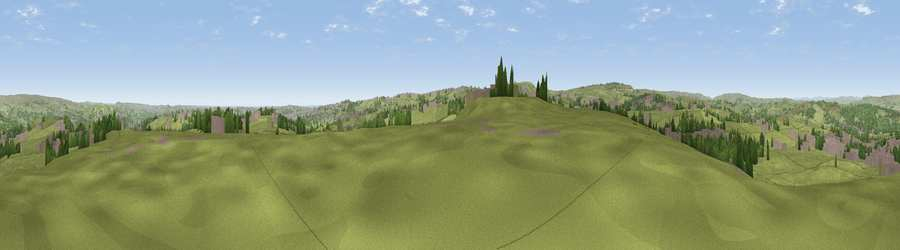

Harrop Edge
#14228 in England · top 17% of its area beats it · near WilsdenWhere it is
The exact computed spot (SE 09618 34729). Click the marker for map links.
The view, rendered

A 360° render of this exact spot computed from the terrain model, tree cover and land cover — summer colours, afternoon light, calibrated against photographs of famous viewpoints. Real trees, hedges and buildings will differ in detail.
The panorama
Grey silhouette: terrain skyline in each direction (720 bearings, Earth curvature and refraction included). Dashed green: skyline with trees (+15 m) and buildings (+8 m) as obstacles. Blue strip: how far the ground is visible on each bearing.
Where the view opens
Wedge length = distance to the farthest visible ground on that bearing (vegetation-aware). Rings at 10, 25 and 50 km.
What fills the view
71% grassland · 15% woodland · 13% built-up
Angular shares of the visible panorama (visual magnitude), not map area. Landscape diversity 0.36 (0–1 Shannon).
Key numbers
More beautiful places nearby
The staircase of upgrades: each row has a higher view potential than everything closer. Driving times are estimates from straight-line distance, calibrated against real road routing — check an actual route before setting out.
| Place | Direction | Drive | Score |
|---|---|---|---|
| Viewpoint near Queensbury | S · 4 km | ~9 min | 64.1 |
| Viewpoint near Thornton | SSW · 4 km | ~9 min | 68.6 |
| Viewpoint near Baildon | NE · 7 km | ~14 min | 70.4 |
| Viewpoint near Stump Cross | S · 7 km | ~15 min | 71.5 |
| Rawdon Billing | ENE · 13 km | ~24 min | 73.0 |
| Viewpoint near Otley | NE · 14 km | ~26 min | 77.5 |
| Darwen Hill | WSW · 44 km | ~64 min | 80.7 |
| White Brow | WSW · 49 km | ~70 min | 82.9 |
53.80876, -1.85543 · source: dobih hill · position refined by local search. Computed location — check access rights before visiting.